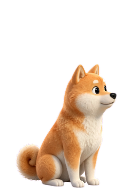

<!doctype html>
<!-- A stand-in video call for the demo. The title must start "Meet - ": that is what the pet hides from. -->
<meta charset="utf-8">
<title>Meet - Pack standup</title>
<link rel="preconnect" href="https://fonts.googleapis.com">
<link href="https://fonts.googleapis.com/css2?family=Geist:wght@400;500;600&display=swap" rel="stylesheet">
<style>
  :root { --bg: #110D10; --tile: #1E1820; --line: rgba(255,255,255,.08); --ink: #F2F1EE; --mute: rgba(242,241,238,.6); --accent: #F59B8B; --leave: #E5484D; }
  * { box-sizing: border-box; }
  body { margin: 0; height: 100vh; display: grid; grid-template-rows: auto 1fr auto; gap: 14px; padding: 18px 20px 20px;
    background: radial-gradient(70% 60% at 18% 8%, #3B2A3A 0, transparent 60%), radial-gradient(80% 70% at 100% 100%, #1B3049 0, transparent 62%), linear-gradient(160deg, #19151E, #0E141E);
    font: 15px/1.3 Geist, system-ui, sans-serif; color: var(--ink); overflow: hidden; }
  header { display: flex; align-items: center; gap: 10px; font-weight: 600; }
  header .rec { width: 9px; height: 9px; border-radius: 50%; background: var(--leave); box-shadow: 0 0 0 4px rgba(229,72,77,.18); }
  header .time { margin-left: auto; color: var(--mute); font-weight: 500; font-variant-numeric: tabular-nums; }
  .grid { display: grid; grid-template-columns: 1fr 1fr; grid-template-rows: 1fr 1fr; gap: 12px; min-height: 0; }
  .tile { position: relative; border-radius: 18px; background: var(--tile); border: 1px solid var(--line); display: grid; place-items: center; overflow: hidden; }
  .tile.talking { box-shadow: 0 0 0 2px var(--accent), 0 0 40px -6px rgba(245,155,139,.5); }
  .av { width: 92px; height: 92px; border-radius: 50%; display: grid; place-items: center; font-size: 34px; font-weight: 600; color: #fff; }
  .tile.talking .av { animation: talk 1.2s ease-in-out infinite; }
  @keyframes talk { 50% { box-shadow: 0 0 0 10px rgba(245,155,139,.18); } }
  .tile img { height: 72%; object-fit: contain; filter: drop-shadow(0 18px 24px rgba(0,0,0,.45)); }
  .name { position: absolute; left: 12px; bottom: 12px; padding: 5px 10px; border-radius: 999px; background: rgba(0,0,0,.45); backdrop-filter: blur(8px); font-size: 13px; font-weight: 500; }
  .name .mic { color: var(--mute); margin-left: 4px; }
  footer { display: flex; justify-content: center; gap: 12px; }
  footer button { width: 52px; height: 52px; border-radius: 50%; border: 1px solid var(--line); background: #2A2330; color: var(--ink); font-size: 20px; }
  footer button.leave { width: 86px; border-radius: 26px; background: var(--leave); border-color: transparent; font: 600 15px Geist, system-ui; }
</style>
<header><span class="rec"></span>Pack standup<span class="time" id="t">00:00</span></header>
<main class="grid">
  <div class="tile talking"><div class="av" style="background:linear-gradient(160deg,#9BB6FF,#5A6FD8)">MR</div><span class="name">Maya R.</span></div>
  <div class="tile"><div class="av" style="background:linear-gradient(160deg,#8FE0B8,#3E9C77)">JT</div><span class="name">Jordan T.<span class="mic">🔇</span></span></div>
  <div class="tile"><div class="av" style="background:linear-gradient(160deg,#FFB2A4,#E9776A);font-size:26px">You</div><span class="name">You</span></div>
  <div class="tile"><span class="name">Kuma (on mute, thankfully)<span class="mic">🔇</span></span></div>
</main>
<footer><button title="Mic">🎙</button><button title="Camera">📷</button><button title="Share">⬆</button><button class="leave">Leave</button></footer>
<script>
  const start = Date.now(), el = document.getElementById('t');
  setInterval(() => { const s = Math.floor((Date.now() - start) / 1000); el.textContent = `${String(s / 60 | 0).padStart(2, '0')}:${String(s % 60).padStart(2, '0')}`; }, 500);
</script>
